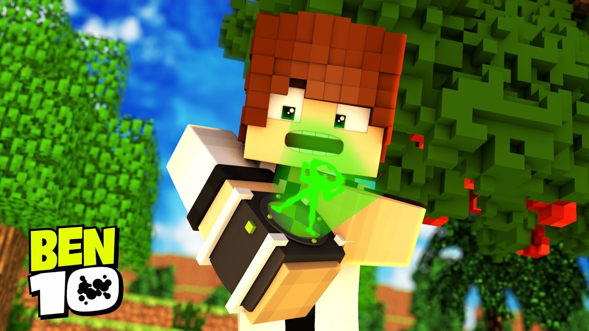
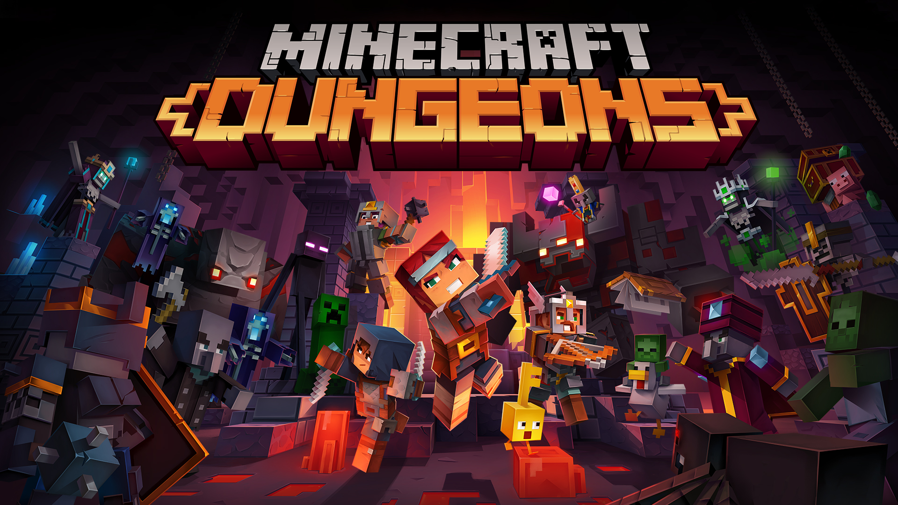

Todos los Articulos
Nuevo DLC de Ben 10 para minecraft
Últimamente se especuló mucho sobre la implementación de un DLC al juego de minecraft, no fue...
El desafortunado desceso de Minecraft earth

Es indiscutible que Mojang, con Minecraft Earth, ha tenido muy mala suerte. Y es que su gran apuesta para 2020 era...
Java vs Bedrock, ¿que minecraft es mejor?

He perdido la cuenta de la cantidad de ocasiones en las que he escuchado esta pregunta, ¿Minecraft Java o Bedrock? ...
¿Que es Minecraft Dungeons
Minecraft Dungeons es el título más reciente de Mojang, creadores de Minecraft. Ha sido muy esperado por los fans, ya que...